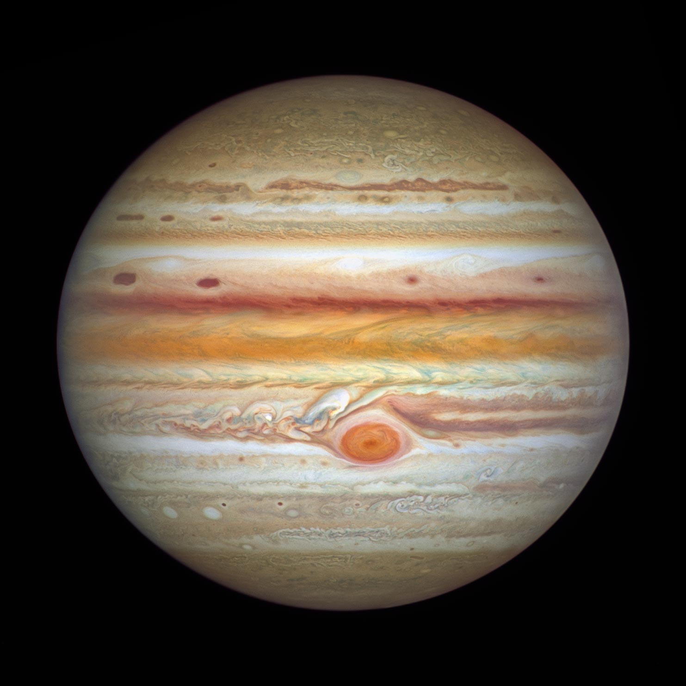

Days
Jupiter has the shortest day of all the planets, lasting only about 10 hours.
Jupiters gravitational pull is so strong it can influence the orbits of other celestial bodies, including asteroids, comets, and even other planets.
Jupiter is the largest planet in our solar system.

Jupiter has the shortest day of all the planets, lasting only about 10 hours.
Jupiters atmosphere is made up of 90% hydrogen and 10% helium.
Jupiter has 97 known moons.